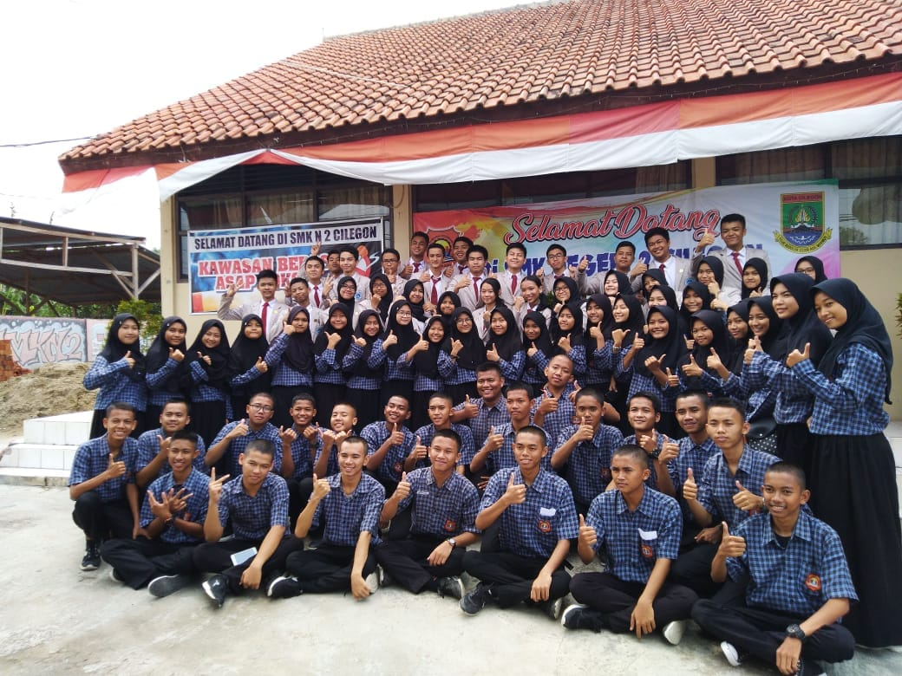

ABOUT ME
Hello Everyone!
People say "don't know then don't love". Mungkin basi kali ya kalo pake alasan itu, heheh. So tanpa basa basi aku mau kenalin diri aku.Cek dibawah ya gaes!
Biodata
| Full Name: | Jeneva Yoshe Alfreda Ritonga |
| Nickname: | Jeneva,Jene,Jeje,Majen,Bangjen Or Neva |
| DOB: | Jakarta, May 19th 2002 |
| Sex: | Female |
| Religion: | Christian |
| Address: | JL. Kp. Warnasari RT 03 RW 09, East Cilebut,Sukaraja,Bogor,West Java,16710 |

MY FAVORITE THINGS TO DO
Kalau soal hobi, sebenernya banyak banget. karena,aku tipe orang yang apa aja bisa disenangi dalam sekejap. Dulu waktu masih kecil hobi aku berenang dan bersepeda. waktu di sekolah dasar hobi aku badminton juga baca buku. Dan sejak SMP sampai sekarang hobi aku main basket,main gitar,masak, serta travelling. Aku paling suka travelling ke tempat tempat bersejarah,tempat tempat baru,pegunungan,dan pantai

MADE BY ME
Tugas sekolah di SMK SMAK Bogor tuh beragam banget. Mungkin salah satunya seperti di bawah ini. Dari penampakan dibawah ini aku membuat gif.Tugas ini dibuat untuk memenuhi tugas KKPI :))

MY IDOL
Mungkin tidak banyak orang yang tahu tentang idolaku. Kenalkan dia idolaku 温俊辉(Wēnjùn huī),dia adalah seorang aktor dari negeri tirai bambu, tampan sekaliii. Selain menjadi aktor dia juga menjadi salah satu personil boyband di negeri gingseng yaitu boygroup SEVENTEEN.Grup ini terdiri dari 13 lakilaki yang begitu bertalenta. Omong omong Jun ini merupakan tipe ideal ku :)

MY FRIENDS
So kali ini aku akan sedikit bercerita. Seperti yang aku katakan sebelumnya, aku bersekolah di SMK SMAK Bogor. Dan sekarang aku duduk di kelas 11. Pada awalnya aku di berada di kelas 11-1, dimana Ibu Rika Sri Agustina atau biasa dipanggil Mommy Rika sebagai wali kelas kami. Kelasku ini diketuai oleh Daffin, ia ketua kelas yang tegas dan baik. Ini adalah foto bersama kami.
Aku juga ikut organisasi yaitu persatuan pelajar . Aku salah satu pengurus dibidang kedisiplinan.
Di kelas aku ini tidak mempunyai teman dekat.Tapi disekolah ini tentu ada. Perkumpulan kami bernama 'ALPHA WOMAN' . Gak tau sih kenapa bisa dapet nama itu .
Sorry disini gak ada icen ,karena foto yang satu lagi yang ada icennya hilang.
kalau ini gambaran jojo
Jadi kali aku bakal intro singkat about them
Dayri Mutti Hidayat
Biasa dipanggil dayrol kalo dikomplotan kami.Kalau panggilan dari aku 'Nakyung' .Manusia yang satu ini lahir pada tanggal 29 April 2002. Anak tengah dari 3 bersaudara.kami tidak pernah sekelas, tapi kami dekat karena ada di ekstrakulikuler yang sama.Nakyung ini tipe anak yang tomboi,mungkin efek dari anak perempuan satu satunya,diantara temanku yang lain dia yang paling dekat denganku. satu lagi dia adalah yang termuda diantara kami.Saat yang lain lahir lebih dulu dariku dia justru setelahku 16 Oktober 2002,difoto dia yang oakai sweater hitam ya gaes
Tanisa Krismarchia
Kalau yang ini namanya Tanisa, kalau aku manggil dia Tanchen atau kadang 'cina' kita gak rasis kok karena aku chinesse too hehehe.Tapi kalo dia keliatan banget .doi lahir di 17 maret 2002
Rahma Jovita Siwy
Si jo ini sering dipanggil kembaran aku,padahal gak sama sekali mirip. Mungkin kalau nama sih iya Je dan Jo.Fact about her , she is the oldest of us. lahir pada 20 Ferbtuari 2002
Sendi Candra
Jadi yang satu ini kerap dipanggil icen, dia adalah dirijen angkatan kami. dia yang terkalem diantara kami, tapi hati hati dibalik kalemnya ada jiwa garang yang tak tertahankan. For your information doi lahir tanggal 12 Maret 2002.
Oiya, di semester 2 ini aku pindah kelas. Ke kelas yang kini sedang hangat dibicarakan. PSG. PSG atau Pendidikan Sistem Ganda, yang mana kelas ini akan melakukan PKL di kelas 11. di kelas ini berisikan orang-orang bertekad juga cerdas. Cukup seru, karena rata rata penghuninya adalah teman kelas 10 ku. Wali kelasku pun juga ganti yaitu Bu Sri atau yang dipanggil bu cici , wanita muda yang baik hati dan cantik. Walaupun sudah pindah kelas, aku masih suka bergabung dengan teman-temanku 11-1. Berikut ini foto bersama pertama kami di kelas PSG hehhe.


Mulai tanggal 11 Maret kita PKL gaes!<3
MY SCHOOL
And the last.This is my school, SMK SMAK Bogor. Sekolah dengan basic analis kimia tapi bisa kesenian dan juga komputer. Sekolah yang terletak di Jl. Binamarga I, Ciheuleut, Baranangsiang, Bogor Timur, Kota Bogor 16143. Sekolah Menegah Kejuruan yang berada di bawah Kementerian Perindustrian Indonesia.

CONTACT
If you want.You can contact me at:
Phone: +62821 2593 1164
Email: jenvayoshe06@gmail.com / jenevayoshe63@smakbo.sch.id